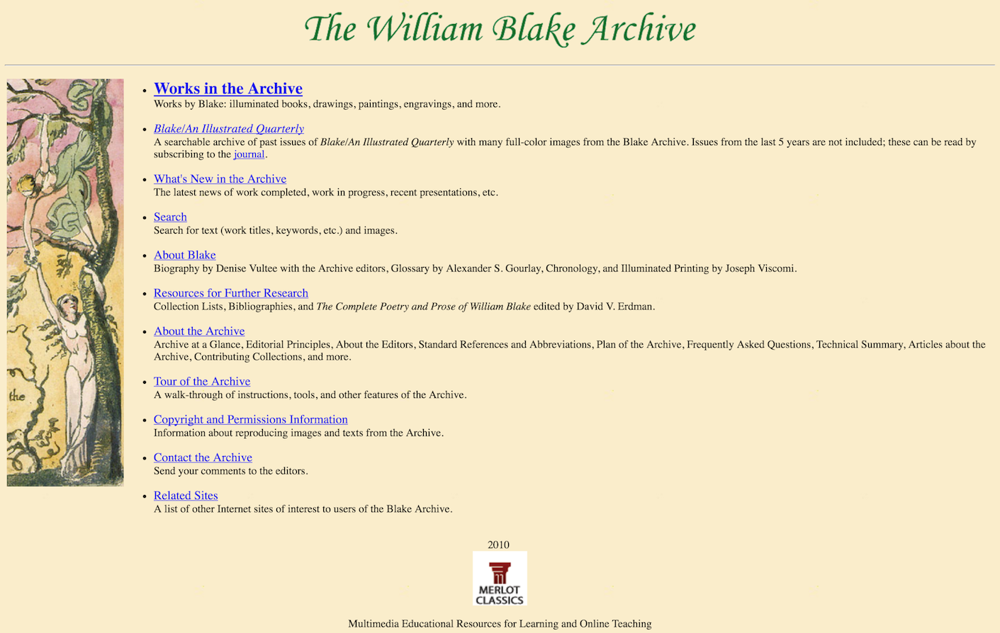
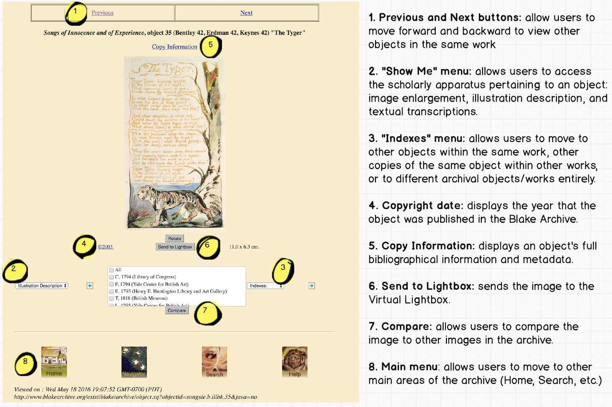
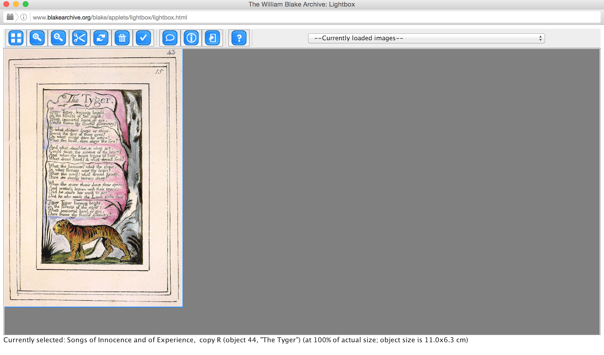
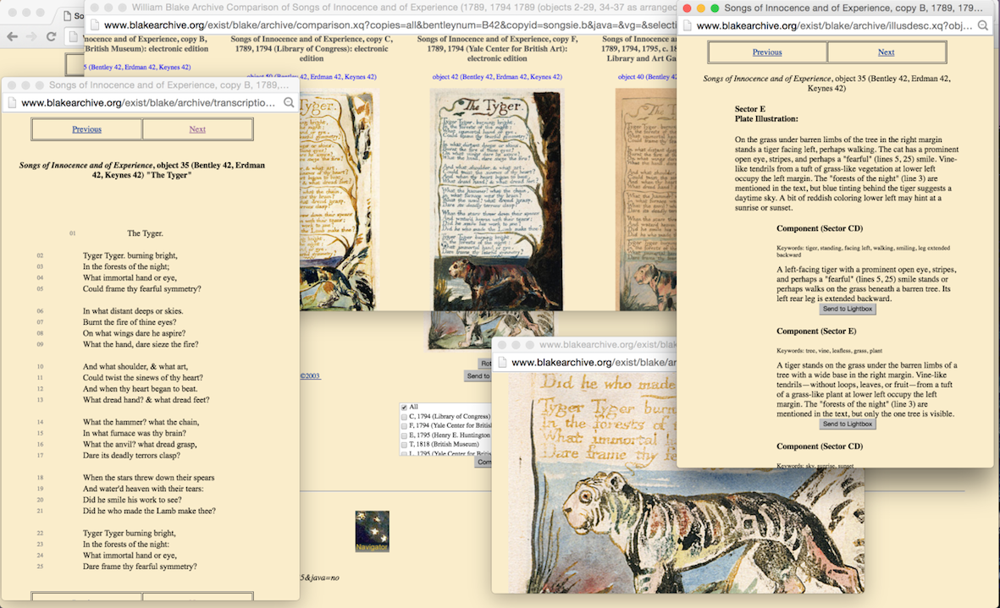

The William Blake Archive
Table of Contents
Abstract
The William Blake Archive (WBA) attempts to remediate digitally William Blake’s entire corpus of poetic and artistic artifacts. The resulting website exhibits high-fidelity images of his surviving prints, plates, drawings, and canvases that would otherwise remain isolated in difficult-to-access collections around the world. Using an editorial strategy that focuses on the physical object, the WBA successfully individuates physical copies of Blake’s work by supplementing each digital facsimile with unique bibliographic information, editorial commentary, and viewing tools that help users investigate the object’s unique material nature. Functionally, the site would greatly benefit from updates to its user interface and key applet (the Virtual Light Box). The project succeeds as a scholarly digital edition by providing curated and contextualized access to Blake’s literary and artistic output, implementing its core editorial strategy since the archive was launched twenty years ago, in 1996. This review examines the WBA as it existed until 12 December 2016, when the site underwent a major overhaul.
Introduction
William Blake (1757-1827) was an English poet, painter, and printmaker, who frequently combined mediums to produce some of the most innovative work of the Romantic period. He is responsible for the invention of relief-etching (a reversal of the intaglio method), which he used to create a series of what he termed ‘illuminated books,’ containing prints that blur the boundaries between text and art. Surviving copies of these original prints are housed in a variety of public and private collections around the globe, with varying but typically limited levels of accessibility (in part to protect and conserve the originals). While some of these artifacts have been republished for public consumption over the years, either in print anthologies or digital exhibits, The William Blake Archive (WBA) represents the first concerted effort by a group of scholars to curate, annotate, and publish as many copies of William Blake’s works as possible into a materially-focused scholarly digital edition (SDE).
WBA’s endeavor is important because individual copies of Blake’s works, particularly the illuminated books, are often drastically and intentionally visually distinct from one another. On the plates he prepared for his illuminated books, Blake inscribed designs that intermingle his handwritten poems with his illustrations. The plates were printed at various times, producing differences in inking and impression, and once printed, Blake added to the prints with ink and water color designs. By liberally experimenting with color choice and other elements from copy to copy, Blake transformed each physical page into a uniquely original artifact that he would bind with others to make up his illuminated books. Blake also had a tendency to rearrange the order in which the poems appeared in his reprinting of these books, thus further problematizing future editorial efforts to publish definitive editions of his work. Blake also worked in other media — painting, engraving, and watercolour — and the ability to understand both individual works and the relations between them has presented an ongoing challenge for Blake scholars.
The digital paradigm has relieved pressure to provide a definitive edition of the illuminated books and has made it possible, at least theoretically, to present digital surrogates of all surviving copies of all Blake’s diverse creations. The William Blake Archive embraced this opportunity in the mid-1990s, and produced the following three outcomes:
- An archive of William Blake’s works, composed of high-fidelity digital facsimiles of the physical objects that comprise his output as a poet and visual artist (e.g. pages, plates and canvases). Each object is attached to a wealth of scholarly information specific to its indexical level and can be observed in isolation or in juxtaposition with related objects.
- A body of detailed supplementary material providing the historical and technical context for William Blake and his works, as written by the editors and expert contributors.
- A carefully curated list of resources for further research, including a series of annually updated bibliographies organized by topic and an open archive of Blake/An Illustrated Quarterly — a University of Rochester journal in operation since 1967 as the Blake Newsletter.
Although it calls itself an archive, the WBA satisfies our developing definition of a SDE insofar as it collects many different electronic editions of Blake’s literary and artistic output. It explains in detail its protocols and rationale for reproducing, curating, annotating, and transcribing the digital facsimiles of Blake’s plates, pages, and works of art. According to the editors, the WBA has sought from its inception to adapt the scholarly rigour of a print edition to the digital environment. ‘It makes sense to see the Blake project as an extension of ongoing archival, cataloguing, and editorial enterprises into a new medium in order to exploit its radical advantages,’ explains the WBA’s Editorial Principles. One of the first digital scholarly editions, the William Blake Archive’s existence is coeval with the development of the web itself. In 2003, it won the Modern Language Association's Prize for a Distinguished Scholarly Edition, and in 2005 it received the seal of approval of the MLA's Committee on Scholarly Editions. The WBA was the first digital edition to be awarded these honors (Jones 2006).
Patrick Sahle has recently provided a pragmatic and, we believe, useful definition for a ‘scholarly edition’ (SE) and a ‘scholarly digital edition’ (SDE): the former, he describes as ‘the critical representation of historic documents,’ and the latter as ‘guided by a digital paradigm in [its] theory, method and practice’ (Sahle 2016, 28). Sahle’s use of the term ‘digital paradigm’ reflects the understanding that what an edition is and does has been transformed by its digital representation. SDEs, says Sahle, ‘offer the opportunity to overcome the limitations of print technology. The new possibilities have a fundamental impact on the theory and methodology of critical editing in general’ (20). What we want and may be able to do within digital media may change our very approach to editing, thus forcing us to rethink entirely the goals and outcomes of textual scholarship.
Thus, the WBA terms itself an archive with a set of ‘editorial principles,’ and its three editors state that ‘we want the Archive to be much more than an edition’ (WBA, Editorial Principles). As Sahle suggests in his discussion, projects like the WBA challenge the very concept of an edition: ‘If we take the critical engagement and the application of scholarly knowledge as the defining characteristics of an edition, then we can say that from a certain point on, an archive starts to be an edition’ (34). We believe that the WBA has successfully undergone this metamorphosis from archive to edition (and indeed to something more than both), by critically engaging with and applying scholarly knowledge.
Brief history of the project
The WBA is one of the earliest experiments in the digital humanities, having begun over two decades ago and existing in a state of constant development since then. The Archive was conceived by three Blake scholars, Morris Eaves (University of Rochester), Robert Essick (University of California, Riverside), and Joseph Viscomi (University of North Carolina), who were then working together on a pair of volumes for the William Blake Trust’s facsimile editions of the illuminated books. They arrived at the idea of a digital edition for Blake after experiencing frustration with the physical constraints of the print medium, which posed inevitable limits on their ability to represent fully and faithfully the changeable nature of Blake’s productions. The print editions prepared by Eaves, Essick, and Viscomi could only present one copy of each illuminated book — thus implicitly canonizing one version/copy over the rest. On a digital platform, these editors realized, the shades of nuance and variety in Blake’s oeuvre had the potential to be more wholly preserved and presented.
In 1994, the trio applied to become Associated Networked Fellows at the Institute for Advanced Technology in the Humanities (IATH). Here they drew up a proposal for a digital William Blake Archive in three major phases: First, they would attempt to photograph and digitally publish multiple copies of each of Blake’s illuminated books. Second, they would expand their procedure to other categories of his work (e.g. to his individual prints, paintings, drawings, and manuscripts). And third, they would add interpretive supplementary material, explore secondary publication options, and investigate educational applications for the project. The exact structure and timeline of this plan would evolve in the years to come, but the original proposal still represents a fair outline of the trio’s intent and approach to setting a William Blake SDE in motion.
During Phase 1 the co-editors commenced the project with a focus on Blake’s illuminated books. The illuminated books were the first category selected for inclusion for the following reasons:
- Their historical and artistic value;
- The editorial and technical challenges they present;
- Their relative coherence as an extensive group;
- The difficulties their fragility and wide dispersion have created for scholars;
- And the need for a new map of their place in Blake's lifetime of artistic labor (WBA, Editorial Principles, see ‘Principles of Inclusion’).
The team began by determining the optimum photographic format, scanning resolution, and file size for their archive-type while simultaneously compiling a prioritized list of Blake’s books and seeking cooperation from the collections these were housed in. By the end of the first year, the project had agreements with four contributors: The Library of Congress, the Huntington Library and Art Galleries, Glasgow University Library in Scotland, and the Essick Collection. The editors supervised an initial six-day photography session at the Library of Congress that yielded the archive’s first 620 images. Eaves and Essick shared the responsibility for generating bibliographical information and image descriptions, while Viscomi produced most of the final digital images and transcriptions of Blake’s texts. The editors launched the first web version of the William Blake Archive in 1996 with two copies each of Blake’s Book of Thel and Visions of the Daughters of Albion.
In 1996, new hardware, software, and technical support enabled the team to develop an image-based search system, to add a list of reference works, and to incorporate the Inote tool (a Java-based applet that allowed them to attach region-specific annotations to their images). Many more copies of Blake’s twenty illuminated books were added, and new sections of the site debuted to improve transparency of the project and showcase its aims and objectives, editorial principles, technical summary, and future plans. These sections made public the degree of scholarly rigor to which the project holds itself accountable, demonstrating how the WBA not only archives images of Blake’s works, but also critically represents these images by adjoining information deemed important to understanding them in their physical and historical contexts.
In 2000, the team was able to enter Phase 2 by uploading additional categories of Blake’s work:
By expanding outward from the core of the illuminated books (typically watercolor relief etchings) to the other works designed and engraved by him, and then to those designed by him but engraved by others, and finally to those designed by others but engraved by him, we aim to maintain coherence while gradually achieving the desired scope.
An inspection of the Archive’s Updates section reveals that the editors have by and large successfully followed this curation strategy over the years — fleshing out the categories of Blake’s work from the illuminated books outwards, and contextualizing each new addition as it occurs in their Updates section. They thus developed a content model than has been able to ‘facilitat[e] productive growth’ (Reed 2014, para. 19).
By the end of 2003, the WBA had expanded to include a full range of drawings, paintings, and prints from an expanding circle of nineteen international collections. One of the benefits of the Archive became that it now allowed researchers to observe the intersections between Blake’s illuminated books and his other artistic and commercial ventures (Eaves 1999, 139). Entering Phase 3 in 2004, the number of contributing collections and digital images continued to rise, and the site’s textual content underwent a conversion from its original SGML encoding to an XML format that would preserve usability moving forward.
The WBA then moved its base of operation to the Carolina Digital Library and Archives at the University of North Carolina (UNC), which provided the resources to address its technical and editorial challenges simultaneously. A new manuscript team updated many documents by incorporating an XML tagset with additional Text Encoding Initiative (TEI) elements that regularized abbreviations and unconventional spellings, ensuring that archived objects are now fully searchable by their transcribed content. The incorporation of a Blake/An Illustrated Quarterly archive was also initiated during this phase in order to flesh out the SDE with a ‘fusion of cross-searchable primary (editorial) and secondary (critical) scholarship,’ (WBA, ‘Plan of the Archive').
In 2009, kicking off Phase 4, the WBA added the Related Works system: a set of tools designed to enable users to study the relationships between works and individual objects in the Archive. ‘Lightbox’ replaced Inote as the WBA’s image-annotation app, and gave users the tools to manipulate and compare objects in a single workspace. The rest of Phase 4’s goals include expanding the WBA’s backlog of Blake/An Illustrated Quarterly issues and the continued addition of specifically queued Blake artifacts to the Archive. The content of the Archive itself has been updated periodically over the past four years and as recently as June 2016. The WBA increasingly has become a standardized source of images and transcriptions for the republication of Blake’s works, to such an extent that it was sourced by W.W Norton & Company for its latest critical edition of Blake’s works (Grant 2008). We present this long history to demonstrate how carefully the project has been staged and grown during its twenty-year existence.
Editorial principles and strategy
The WBA’s co-editors are all leading Blake scholars and editors who came to the project after experimenting for years with different editorial modes for presenting the poet-artist in print. The editors cite the arguments developed in several of their books — Essick’s Separate Plates of William Blake (1983) and William Blake’s Commercial Book Illustrations (1991), Eaves’s The Counter-Arts Conspiracy: Art and Industry in the Age of Blake (1992), and Viscomi’s Blake and the Idea of a Book (1993) — as thus having laid the philosophical groundwork for their decision to prioritize the physical object over the abstracted concept of a ‘work’ in their developing SDE.
In this way — as Ashley Reed, project manager of the WBA from 2007 to 2013, explains — the project structures itself around the concept of ‘Blake-as-craftsman’ (Reed 2014, para. 11). The WBA’s editorial strategy is therefore designed to allow its audience to observe and evaluate the original artistry, arrangement, and contents of Blake’s surviving physical canon, down to minute details and differences between various printings. The expansion of the archive to include engravings, paintings, drawings, and manuscripts has enlarged this understanding of ‘Blake-as-craftsman,’ while remaining committed to editorial and curatorial practices that emphasize Blake’s productive processes.
In its representation of historical documents, the WBA resolutely does not offer reading texts beyond the transcriptions of the actual document witnesses. The WBA deliberately departs from the strategy native to the print edition, in which an editor
must not only extract text from objects that are composites of text and design and convert them to conventional type but also must represent ‘the work’ as a single work — The [First] Book of Urizen — rather than as a collection of different visual and textual orders under one title. In such printed editions, differences are relegated to the editorial apparatus.
By design and opportunistically, the WBA deviates from strategies in which ‘the edited text is by far the most important feature, the core and the exclusive centre of the edition’ (Sahle 2016, 31). Its aim is instead to allow users to view different copies of Blake’s works, side-by-side, rather than representing an ideal, definitive text. The WBA leverages digital media to accomplish this objective out of a recognition that Blake’s productions were never presented, viewed or understood as single works in his lifetime.
Publication and presentation
Site structure and appearance

While the WBA’s tagging system and archival structure is demonstrably sound, its front-facing user interface is noticeably dated (its editors acknowledging that a complete overhaul was overdue in 2012). The most problematic element of this outdatedness is its lack of a straightforward, consistent, and comprehensive navigation menu. Navigation tools are usually present in one form or another across the WBA, but their clarity, location, and functionality varies greatly. When used, these navigational tools too often proliferate additional tabs or windows when the user attempts to access a new page, resulting in many open tabs and navigational dead ends. The WBA lacks a drop-down navigation menu and search bar anchored at the top (or side) of the page that occurs across all pages (see Fig. 1), one of the core design features expected of a modern website. Incorporating one would be a helpful and intuitive solution to the issues mentioned here.
Archive organization and contents
The William Blake Archive currently contains multiple copies of twenty illuminated books, along with multiple copies of sixty other works or groupings of works in genres such as commercial book illustrations, solo prints and prints in series, drawings and paintings, and manuscripts and typographic works. In the main index, works or groups of works are categorized according to medium and arranged chronologically within these sections. One can then access the related bibliographical information and editorial commentary of a work on several levels, depending on the genre. For example, one can observe information relevant to a work on the level of a work, on the level of a specific copy of that work, and on the level of a specific page (or ‘object’) of that copy.
At the level of works or groups of works, several paragraphs provide historical and technical context and a list of related works that exist and/or are available within the Archive. At the level of a copy, there are editorial notes if relevant and a chronological list of that copy’s individual page objects.
Finally, at the object level (on the Object View Page), a high fidelity digital image of the artifact is presented and annotated with its original dimensions (at which it can be viewed via the Image Enlargement feature). These digital images are produced using three types of source media: 4"x5" transparencies, 8"x10" transparencies, and occasionally 35mm slides. The most recent version of Microtek’s ScanWizard software is used to perform these scans, and as of June 2012 all images have been scaled 1:1. Once scanned, these images are color corrected and verified for accuracy against the original artifact. These measures translate into superb viewing quality for users, especially when one follows the computer spec-recommendations specified under the WBA’s ‘Known Hazards and Most Favorable Conditions of the Archive’ section. The quality control exercised in the presentation of digital images, given the challenges of shifting technology, deserve high praise (see Viscomi 2002, "Digital Facsimiles").

- Extensive bibliographic information, including the object’s production history, physical characteristics, provenance, and present location.
- Copyright information for each image, particularly important as the rights to most of the WBA’s images are maintained by the original collection that provided the work for digitization.
- An editor’s note, if any special features about the object warrant explanation.
- An option to ‘compare’ the object to its other copies (see Fig. 3). Different copies of an object can be selected from a list and launched in a new window that displays the user’s current and selected copies along a horizontal scroll bar. This feature’s greatest strength is how it enables the user to look through at all these copies within a single window, but the horizontal presentation used to accomplish this is quite inflexible. The Lightbox applet solves some of this inflexibility, but has its own problems, which we will address later.
- A textual transcription, as applicable. Diplomatic transcriptions accompany text-containing images to assist the user in navigating the verbal content of the image. The diplomatic transcriptions are conservative transpositions of the text into a conventional type font, retaining Blake’s capitalization, punctuation, spelling, and an approximation of his page layout. The transcriptions do not make use of elaborate or evocative typography or editorial sigla, as these features are rendered unnecessary in the presence of the high-fidelity facsimile. These transcriptions are also used to effectively index Blake’s works within the WBA’s search engine, although the retention of Blake’s (sometimes) idiosyncratic spelling (e.g. ‘tyger’) requires a degree of knowledge on the part of users to search transcriptions effectively.
- An illustration description, as applicable. In these annotations, the WBA’s editors rigorously describe the literal contents of Blake’s illustrations. The descriptions are meant to address a common problem in Blake scholarship, wherein critical interpretations are made ‘based on weak, partial, or mistaken impressions of what appears in the designs’ and also to reflect differences between copies in matters such as color choice and printing alterations (WBA, Editorial Principles, see ‘Contextual Information’). Furthermore, each description tags specific ‘components’ of the illustration (e.g. a ‘sun’ or a ‘lion’) using a consistent, indexable vocabulary recognized by WBA’s image search engine. The scholarly rigour of these descriptions and their attachment to all image-bearing objects enables an important and unique scholarly feature of the edition: the ability to search for and instantly collate all objects across Blake’s multi-generic oeuvre that share a specific element of iconography.
The contents listed above can be accessed from each object’s Object View Page, and in this way, all historical documents within the WBA are ‘critically’ represented. According to Sahle:
We may take the word critical as a container for all those activities that apply scholarly knowledge and reasoning to the process of reproducing documents and transforming a document or text into an edition. The critical handling of the material is a second necessary condition for an edition. A representation without such treatment or the addition of information is not an edition — but a facsimile, a reproduction or — nowadays — a digital archive or library.
The material in the WBA is handled critically on a number of levels, for example, the meticulous process of photographic reproduction, the addition of metadata to the physical documents, the description of the images on the facsimiles, and the textual transcriptions of each facsimile.
Given these exacting standards for reproduction, transcription, annotation, and meta-data, it makes sense to us that the WBA does not actively solicit contributions from users, but rather has a dedicated staff to maintain, grow, and correct the Archive (the WBA does, however, provide an email to report problems/bugs, and even provides a phone number for ‘particularly urgent or unusual requests’ in their FAQ). The edition’s academic rigor accounts for its success as a scholarly resource. As the editors note, ‘we must supply reproductions that scholars can depend upon in their research’ (WBA, Editorial Principles); the rigorous implementation of these standards ensures that their reproductions, transcriptions, and other contextual information can be cited and relied upon by scholars.
Search engine
WBA’s search engines allows users to locate terms as they appear in work titles and transcriptions, image metadata and illustration descriptions, and supplementary notes and information. This functionality allows users to comprehensively search the contents of both Blake’s text and his images (albeit separately) in order to create new multi-media and multi-generic combinations of information relevant to their academic interests.
The text search returns all instances of the exact phrase searched, although more flexible or sophisticated searches can be accomplished by using wildcards, Boolean operators, and date ranges. The image search allows users to search for recurring visual motifs by typing free-form or by selecting one or more terms from those the site lists to describe postures, figures, gestures, objects, and other motifs that appear in Blake's pictorial work. The WBA provides the following example of this functionality in its search tutorial:
This is merely one of the myriad of iconographic combinations users can create. Thus, in combination with WBA’s textual search engine, users can rapidly curate any imaginable combination of artistic and literary motifs that appear in Blake’s works. This feature demonstrates how the digital paradigm can uniquely elevate the critical value and functionality of a scholarly edition.For example, a person might be described as a child, standing and facing left with arms raised. The italicized terms are part of the Archive's fixed image description vocabulary, which you can view by clicking ‘Show categories and terms used for image search’ on the main search page.
Virtual Lightbox applet

- Zoom and crop images to observe specific details and motifs;
- Drag images around a workspace, allowing users to juxtapose and compare images easily (an improvement on the Object View Page’s ‘Compare’ feature);
- Add multiple objects from the Archive, facilitating easy comparison of images from different genres, media, and time periods;
- Access administrative metadata embedded in the file, which includes an ‘image history’ that details the production history of the physical object and the steps made towards its remediation as a digital file via photography, scanning, and color correction.
In the hands of a dedicated user, these features enable a materiality-based investigation of Blake’s work. In practice, however, the Lightbox application is occasionally buggy and the Java plugin required to run the app precludes its use within the Google Chrome browser. Relatedly, a functional gap worthy of exploration may be the Lightbox’s current inability to ‘save’ a carefully curated workspace and allow the user to return to it later.
Help documentation and tutorials
While the WBA features a wide variety of features and an often daunting interface, it goes to admirable measures to address user confusion by providing a comprehensive Help section. This section contains a variety of easy to follow tutorials with screenshots that explain how to use the Archive’s many sections and features. There also exists a helpful FAQ, and a ‘Tour of the Archive’ — a Java-based tutorial that provides users with an image-annotated walkthrough of the Archive that should take less than 15 minutes to complete.
While this documentation is useful, it is slowly becoming outdated as the WBA has incrementally improved its layout and features but does not appear to have updated its documentation for several years. Old interfaces and discontinued features therefore crop up in many of the tutorial screenshots and explanations. Still, these discrepancies are small enough that they do not yet create any significant cause for confusion.
Areas for improvement
On the Object View Page, users can access the provided tools, annotations, and supplementary information by either clicking a hyperlink or using a dropdown menu, but each separate parcel of information is launched individually in separate windows — a mechanism which can quickly lead to screen crowding (see Fig. 5).

For example, a framework layout could allow WBA users to open more than one of the above features at a time within individual panels arranged on a single page. Depending on the level of customization made possible, such a framework could also allow users to resize, add, or subtract panels as needed – allowing them to easily prioritize the information most relevant to their studies. A possible software tool that could be used to accomplish this is the Versioning Machine (VM), which can be used to construct a display environment that ‘provides for features traditionally found in codex-based critical editions, such as annotation and introductory material’ while also ‘taking advantage of opportunities of electronic publishing, such as providing a frame to compare diplomatic versions of witnesses side by side, allowing for manipulatable images of the witness to be viewed alongside the diplomatic edition, and providing users with an enhanced typology of notes’ (Vetter 2016). Good examples of modern digital humanities projects making use of VM include The Wandering Jew's Chronicle (notable for its inline Image Viewer and accessible panel layout), and the Thomas MacGreevy Composing a Poem collection in the Thomas MacGreevy Archive (notable for its use of movable panels). Done well, a similar usage by WBA could incorporate or even replace the WBA’s current digital workspace proxy ‘The Virtual Lightbox.’
Although, as we have suggested, some of the tools developed by and incorporated in the WBA could be updated and improved, it remains certain the editors and their team have, in their project design, been ‘guided by a digital paradigm.’ Sahle notes that
in recent years we have even seen the integration of new features and tools into the edition, allowing for customisation, personalisation, manipulation and contribution. In the idea of virtual research environments, the border between primary material, its usage for interpretation and analysis, and the publication of findings is finally obliterated.
This description perfectly captures the ambitions of the WBA. Although not all of the tools are fully functional, the objective throughout is to harness digital technology for scholarly ends. It is true that ‘one effect of this change in methodology’ from print to digital editing is that ‘the edited text is relativised and the multiple text is facilitated,’ but we view this not as a loss but as a transformation resulting from the shift from page to screen (Sahle 2016, 31). The WBA, like print editions, enables several scholarly primitives, as described by John Unsworth — those of reading and annotating, but also those of discovery (through searching and browsing), comparing (using the compare feature), and collecting (in the Virtual Lightbox). In this way, the WBA successfully exploits digital media to achieve its scholarly objectives.
Conclusion
The William Blake Archive has succeeded in accomplishing its original goals of digitally consolidating and presenting William Blake’s artistic material output. The WBA presents an intellectually-sound foundation for a scholarly digital edition by presenting its intent, principles, technical parameters, and history on its website, and by continuing to document its ongoing progress for many years.
Where room for growth is concerned, many sections of the website warrant informational updates from the past four years or so, and a dramatic revision of the site’s user interface may be required to prevent it from falling behind today’s standards. The option to view an object’s editorial notes and annotations from within the Object View Page (such as in the style of a framework layout), is highly recommended, as well as is further development of the Virtual Lightbox applet, which has the potential to elevate the WBA’s significance as a research tool to new levels of sophistication.
Overall, the WBA is an impressive, ground-breaking SDE that has followed a clear-sighted editorial strategy, is citable and transparent, and has maintained a high standard of digital image quality and scholarly contextual information across its many additions and developments. WBA’s rigorous editorial attention to transcription and illustration descriptions, image-inclusive search functionality, and comparative tools such as the Lightbox, serve to highlight both the uniqueness of Blake’s individual artifacts and their relationship to one another. In light of these features, we believe the William Blake Archive must be classified as a scholarly digital edition. Furthermore, no printed collection of Blake’s works could practically present and annotate such a high-volume and high-definition series of facsimiles in as profoundly accessible, comparative, and rearrangeable a format.
Bibliography
- Balsamiq Mockups. 2016. Computer software. Balsamiq. Balsalmiq Studios.
- Bergel, Giles, ed. 2016. "The Text." The Wandering Jew’s Chronicle. Accessed October 4. http://wjc.bodleian.ox.ac.uk/HTML/WJC.html.
- Blake, Monica. 2004. "Lambeth launches landmark digital archive." The Electronic Library 22 (2). doi: 10.1108/el.2004.26322bab.003.
- Eaves, Morris, et al. 1999. "Standards, Methods, And Objectives in the William Blake Archive: A Response." Wordsworth Circle 30.3: 135-144. http://www.jstor.org/stable/24044108.
- Eaves, Morris. 1992. The Counter-Arts Conspiracy: Art and Industry in the Age of Blake. Ithaca: Cornell University Press.
- Essick, Robert, ed. 1991. William Blake's Commercial Book Illustrations: A Catalogue and Study of the Plates Engraved by Blake after Designs by Other Artists. Oxford: Oxford University Press.
- Essick, Robert, ed. 1983. The Separate Plates of William Blake: A Catalogue. Princeton: Princeton University Press.
- Grant, John E and Mary Lynn Johnson. 2008. Blake’s Poetry and Designs: Illuminated Works, Other Writings, Criticism. New York: W. W. Norton & Company.
- Jones, Steven. 2006. "The William Blake Archive: An Overview." Literature Compass 3: 409–416. doi: 10.1111/j.1741-4113.2006.00331.x.
- Kroeber, Karl. 1999. "The Blake Archive and the Future of Literary Studies." The Wordsworth Circle 30 (3). http://www.jstor.org/stable/24044105.
- Misic, Vladimir. 2002. "MRC for Compression of Colored Engravings." SPIE Proceedings 4790 (Applications of Digital Image Processing XXV). doi: 10.1117/12.452379.
- Pierazzo, Elena. 2016. Digital Scholarly Editing: Theories, Models and Methods. Surrey: Ashgate Publishing Ltd.
- Pierazzo, Elena. 2014. "Digital Documentary Editions and Others." Scholarly Editing 35. http://scholarlyediting.org/2014/essays/essay.pierazzo.html.
- Price, Kenneth. 2013. "Electronic Scholarly Editions." A Companion to Digital Literary Studies. Oxford: John Wiley & Sons, Ltd. 434-450.
- Reed, Ashley. 2014. "Managing an Established Digital Humanities Project: Principles and Practices from the Twentieth Year of the William Blake Archive." Digital Humanities Quarterly 8 (1). http://www.digitalhumanities.org/dhq/vol/8/1/000174/000174.html.
- Sahle, Patrick. 2016. "What is a Scholarly Digital Edition?" in Digital Scholarly Editing: Theories and Practices, ed. Matthew James Driscoll and Elena Pierazzo, 19-40. Cambridge: Open Book Publishers.
- Schreibman, Susan ed. 2016. "Thomas MacGreevy: Composing a Poem: ‘Autumn’." The Thomas MacGreevy Archive. Accessed October 4. http://www.macgreevy.org/collections/vm/samples/autumn.html.
- Unsworth, John, “Scholarly Primitives: what methods do humanities researchers have in common, and how might our tools reflect this?". Paper presented at King's College, London, May 13, 2000. http://people.virginia.edu/~jmu2m/Kings.5-00/primitives.html.
- Vetter, Lara et al. 2016. "Documentation: Versioning Machine 5.0." Versioning Machine 5.0: A Tool for Displaying & Comparing Different Versions of Literary Texts." Last modified January 21.
- Viscomi, Joseph. 2002. "Digital Facsimiles: Reading the William Blake Archive." Computers and the Humanities 36 (1). 27-48. http://www.jstor.org/stable/30204695.
- Viscomi, Joseph. 1993. Blake and the Idea of the Book. Princeton: Princeton University Press.
@article{wba,
author = {Crawford, Kendal and Levy, Michelle},
title = {The William Blake Archive},
journal = {RIDE – A review journal for digital editions and resources},
number = {5},
year = {2017},
doi = {10.18716/ride.a.5.5},
url = {https://doi.org/10.18716/ride.a.5.5},
}TY - JOUR
AU - Crawford, Kendal
AU - Levy, Michelle
TI - The William Blake Archive
T2 - RIDE – A review journal for digital editions and resources
IS - 5
PY - 2017
DA - 2017/02
DO - 10.18716/ride.a.5.5
UR - https://doi.org/10.18716/ride.a.5.5
PB - Institut für Dokumentologie und Editorik e.V.
LA - en
ER - Crawford, K., & Levy, M. (2017). The William Blake Archive. RIDE – A review journal for digital editions and resources, (5). https://doi.org/10.18716/ride.a.5.5Crawford, Kendal, and Michelle Levy. "The William Blake Archive." RIDE – A review journal for digital editions and resources, no. 5, 2017. https://doi.org/10.18716/ride.a.5.5.Crawford, Kendal, and Michelle Levy. "The William Blake Archive." RIDE – A review journal for digital editions and resources, no. 5 (2017). https://doi.org/10.18716/ride.a.5.5.